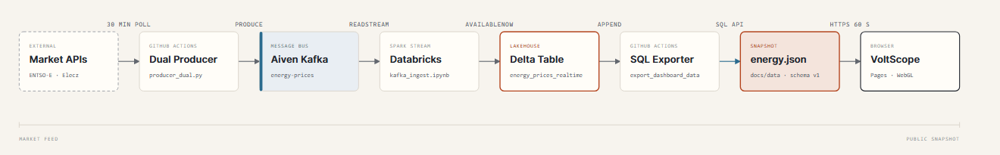
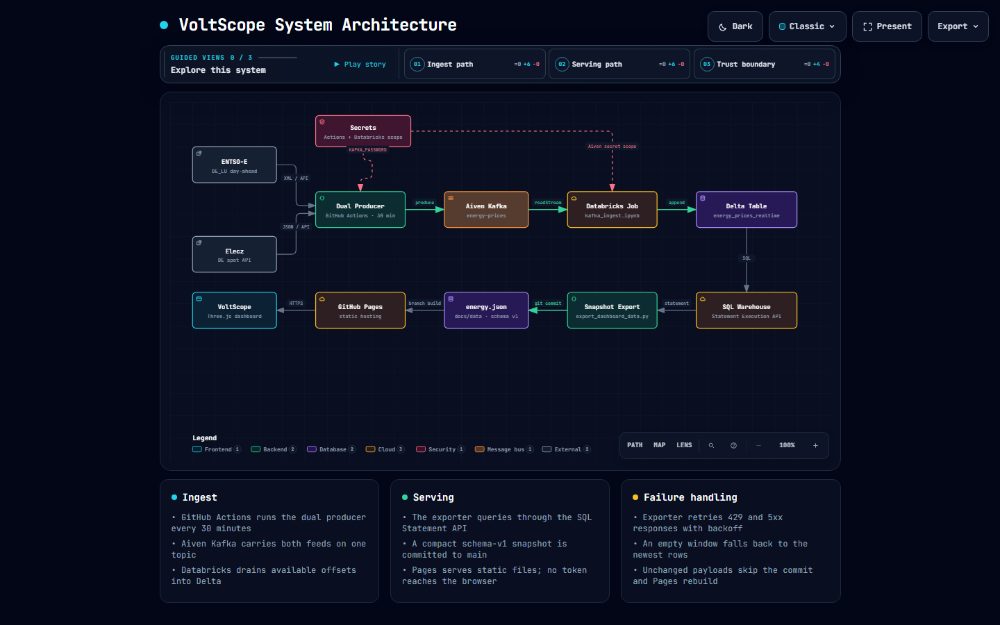
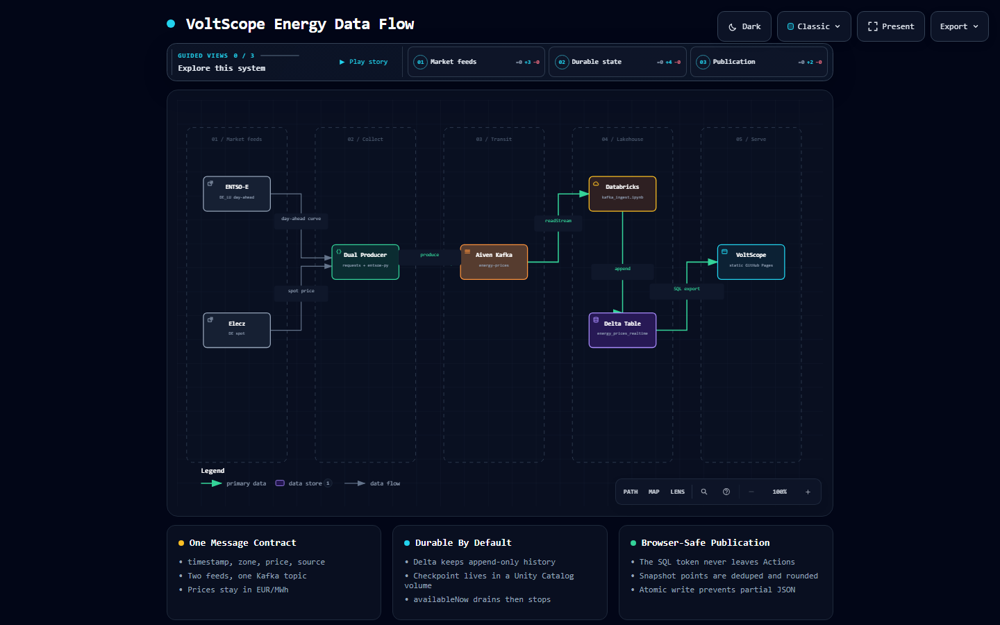

VoltScope · Diagrams
How the data moves
Three views of one system: runtime topology, pipeline lineage, and the editorial path from market signal to public dashboard. The first two are interactive and self-contained.

Editorial · static HTML + SVG
Market signal to public dashboard
Seven stages, two focal nodes, and the credential boundary in one read. Follows the diagram-design editorial rules: 4px grid, hairline rules, no shadows.
OPEN DIAGRAM →
Archify · interactive
System architecture
Twelve runtime components with guided views for ingest, serving, and the trust boundary. Pan, zoom, search, focus, and export are built in.
OPEN DIAGRAM →
Archify · interactive
Energy data flow
Five stages from market feeds to public serving, with lineage labels, transport contracts, and durability guarantees.
OPEN DIAGRAM →